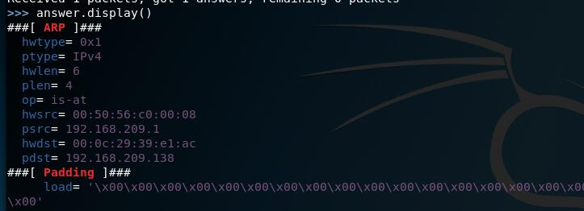
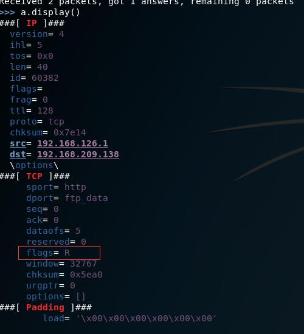

主动信息收集
在与目标主机发生直接关系的情况下，收集最新的信息已经最真实的信息，但是不可避免的是可能被网管发现，所以我们要尽可能的避免被发现，可以使用代理或者其他的机器，再或者发送垃圾信息淹没真实的需求。
主机发现
通过各种协议进行主机的发现。
通过ARP(二层)
通过ARP进行主机的发现，速度快，并且很准确，但是缺点就是只能发现本网段的IP，极少数可能会发现其他网段的IP。
arping 1.1.1.1 -c 1
- 通过这个酒而已判断网段主机是否存活，-c代表发送一个数据包，存在的话呢有返回数据的。
- -d参数：判断有没有欺骗（大概就这个功能，其实实际上就是判断一个IP有几个MAC）
nmap 使用-sn参数进行主机存活发现（ARP方式）。
- 可以探测出来机器的类型
- -il 文件路径 -sn（可以进行文件里面IP的检索）
- 这个地方他并不是单纯的发送了arp数据包，还发送了DNS的反向域名解析。
Netdiscover
- 专用ARP
- 支持主动和被动
- 被动的话呢是通过混杂模式（别人发广播包我能听到
- netdiscover -i eth0 -r 192.168.1.0/24
- netdiscover -p （混杂模式，被动发现）
scapy是Python的一个模块，但是也可以单独拿出来用
- 进入之后使用命令就可以进行数据包的定制
- 例如使用：ARP().display() 就可以展示如何使用
- 展示之后可以发现它里面的结构其实就和ARP数据包的结构一样，我们只需要根据我们的需要去改写就好了。
- arp=ARP()
- arp.pdst=”192.168.209.1”
- answer=sr1(arp)
- answer.display()
- 第一句是来定义一个数据包结构，和ARP一样
- 第二句使用设置变量属性
- 第三个是发包，并将结果赋值给answer
- 最后一个是展示数据

前面的就是数据，后面的padding是因为arp数据包的长度不够，补零。
scapy如果目标不存在，他会一直在发包，所以我们可以给他指定一个timetout超时时间，verbose是报告错误信息。
通过ICMP(三层)
第三层使用IP的协议，这个可以跨路由，并且速度快，但是缺点就是很大可能被防火墙拦截，出错率比较高。
通过ping命令可以进行ICMP的检验，-c参数是个数，-R参数路由追踪（发现比较远的网口IP，而traceroute发现的是比较近的那个网口IP，这都是相对于一个设备，就是说每个经过的每个路由有较远和较近的端口路由）
traceroute是跟踪路由，原理是通过设置TTL从1递增，TTL减为0的时候，将会返回，所以我们可以一个一个追踪出来。
使用scapy进行数据的检验
- i=IP()
- p=ICMP()
- ping=(i/p)
- ping[ip].dst=”192.168.209.1”
- sr1(ping)
- 第一句和第二句是进行数据的设置，第三个是将两个协议进行拼接（ICMP运行于IP协议之上），第三个是设置IP包头的目的地址
- sr1(IP(dst=”192.168.209.1”)/ICMP())
- 上面的一行就等于上面的所有，ICMP是不需要配置的，自动帮我们配置好了就。
- 最好还是添加上timeout=0.1这种的时间超时给sr1，这样子快，否则scapy会一直在等待直到主机上线。
namp
- -sn就是会去发送ICMP的数据包判断是否存在，当然在内网的时候会发送arp数据包，但是垮了好多路由的话呢他是会发送ICMP的数据包，也是会进行DNS的一个解析，他还会发送TCP的一个包（貌似是请求时间戳，但是一般不会得到响应）。
fping
- 和ping的基本命令很像，但是回显的显示有点不一样
- 使用-g参数支持对一个地址段进行ping
- -f参数对一个文件进行进行发包
hping
- –icmp 是发送ICMP数据包，-c数据个数
TCP/UDP(四层)
就是通过TCP的端口打开进行一个探测，准确性高，并且三层如果没发现，四层也是可以发现的。
优点就是准确性很高，即使有防火墙也有可能发现，但是速度很慢。
TCP扫描
- 发送未经请求的ACK包，就是说本来要握手的，但是我只发送一个ACK包，服务器会响应一个RST包，我们可以基于这个特性进行一个TCP的扫描IP是否在线。当然也可以发送SYN包进行检测。
UDP扫描
- 就是发送数据包，但是我们发送的数据一般不会得到响应（因为我们的数据不是服务器所期望的有效数据），只有当端口不存在的时候服务器才会给我们发送一个ICMP的端口不可达的数据包。
scapy
- i=IP()
- t=TCP()
- r=(i/t)
- r[IP].dst=”192.168.126.1”
- r[TCP].flags=”A”
- sr1(r)
- 第五步是指定我们只是单纯的发送一个ACK包
- 
- 可以看到响应的是一个R（RST）的一个包
- 如果不存在的话呢不能响应（个别会就算存在也不响应）
- 上面的是TCP，下面说UDP
- i=IP()
- u=UDP()
- r=(i/u)
- r[IP].dst=”192.168.126.1”
- r[UDP].dport=12321
- a=sr1(r)
- 这个就是要发送一个UDP不存在的端口，理论上会返回一个端口不存在的响应包，但是不知道为什么我的就是没有响应。
- 当然其实有响应的话呢我们还是要判断一下IP包头中的protocol字段的值是否是1，是1的话呢是ICMP的包。
nmap
- 使用命令：
nmap 192.168.209.0-200 -PA 5333 -sn - 这里从0开始是我抓包发现，他貌似第一个并不会跑，所以要跑.1的话呢就要从0开始
- 上面的命令是说，使用TCP的ACK方式进行检测
- 当然也可以使用-PU（UDP），-PO（使用三种数据包，ICMP，IPIP包头，IGMP）
- 使用命令：
hping3
- 使用命令：
hping3 --udp 192.168.209.1 -c 1 - 上述命令准确性不高，存活的话呢就会返回一个ICMP的端口不可达
- 使用命令：
hping3 192.168.209.1 -c 1 - 上述是TCP的包
- 但是他发送的flags=0，没有任何标志，返回的话呢是返回一个RST+ACK，获得的话呢就说明存活
- 但是貌似我的网段不行
- 使用命令：